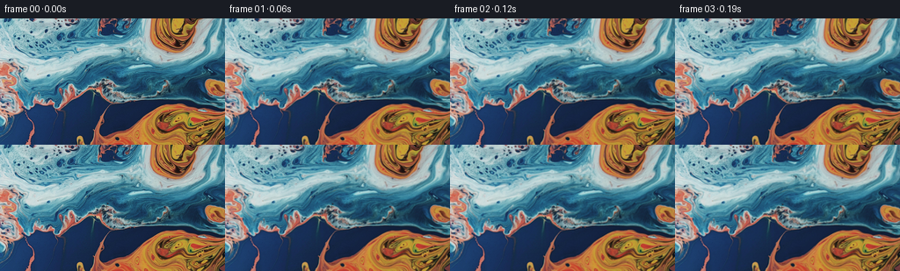

候选 01 · 2026-11-08T22:45:07.105359+00:00 · 点开播放与检查图
inspection.png

transition_check.png

代码变化
--- 上一保存版本
+++ 本次保存版本
@@ -0,0 +1,117 @@
+"""Animate the supplied liquid photograph with a smooth incompressible flow.
+
+The transported object is a high-resolution inverse coordinate field, rather
+than the image itself: the source RGB is sampled just once per output frame.
+This keeps its original fine marbling sharp throughout the sequence.
+"""
+from pathlib import Path
+import json
+import numpy as np
+from PIL import Image
+from scipy.ndimage import map_coordinates, spline_filter
+import artifact_io
+
+ROOT = Path(__file__).resolve().parent
+
+
+def velocity(x, y, t, w, h):
+ # Each term is a stream function. Its curl is divergence-free, including
+ # the soft boundary envelope. Liquid moves along, not through, the edges.
+ ax = np.pi * (x + .25) / (w - .5)
+ ay = np.pi * (y + .25) / (h - .5)
+ sx, sy = np.sin(ax), np.sin(ay)
+ envelope = sx * sy
+ ex = np.pi / (w - .5) * np.cos(ax) * sy
+ ey = np.pi / (h - .5) * sx * np.cos(ay)
+ psi = np.zeros_like(x)
+ px = np.zeros_like(x)
+ py = np.zeros_like(x)
+ # Broad circulation, and two smaller eddies folding the orange/blue edge.
+ vortices = [
+ (139., 77., 69., 49., -390., .22),
+ (191., 112., 39., 31., 330., 1.15),
+ (183., 24., 30., 27., -190., 2.0),
+ (53., 52., 40., 30., 125., .7),
+ (91., 101., 27., 25., 110., 2.6),
+ ]
+ for cx, cy, rx, ry, strength, phase in vortices:
+ cx += 3.0 * (np.sin(.48*t + phase) - np.sin(phase))
+ cy += 2.0 * (np.cos(.39*t + phase) - np.cos(phase))
+ strength *= 1.0 + .12 * np.sin(.58*t + phase)
+ dx, dy = (x-cx)/(rx*rx), (y-cy)/(ry*ry)
+ p = strength * np.exp(-.5*((x-cx)*dx + (y-cy)*dy))
+ psi += p
+ px -= p * dx
+ py -= p * dy
+ # Long ripples superposed on the slow vortices. These vary continuously,
+ # causing the narrow reflective veins to bend and roll instead of slide.
+ waves = [(.090, .079, 20., .67, .3),
+ (-.127, .102, 10., -.81, 1.4),
+ (.186, .147, 3.2, 1.25, 2.7)]
+ for kx, ky, amplitude, speed, phase in waves:
+ angle = kx*x + ky*y + speed*t + phase
+ p = amplitude*np.sin(angle)
+ c = amplitude*np.cos(angle)
+ psi += p
+ px += kx*c
+ py += ky*c
+ return envelope*py + ey*psi, -envelope*px - ex*psi
+
+
+def generate():
+ spec = json.loads((ROOT/'task_spec.json').read_text())
+ width, height, count, fps = (spec['width'], spec['height'],
+ spec['frames'], spec['fps'])
+ source = np.asarray(Image.open(ROOT/'first_frame.png').convert('RGB'))
+ assert source.shape == (height, width, 3)
+ rgb = source.astype(np.float64)
+ coeff = [spline_filter(rgb[:,:,c], order=3, mode='reflect') for c in range(3)]
+ scale = 2
+ yy, xx = np.mgrid[:height*scale, :width*scale].astype(np.float32)
+ x = (xx+.5)/scale-.5
+ y = (yy+.5)/scale-.5
+ u, v = x.copy(), y.copy()
+ frames = np.empty((count, height, width, 3), dtype=np.uint8)
+ frames[0] = source
+ substeps = 4
+ dt = 1.0/(fps*substeps)
+ for n in range(1, count):
+ for k in range(substeps):
+ t = ((n-1)*substeps+k+1)*dt
+ # Midpoint backtrace through the current flow, followed by the
+ # coordinate-field update. No accumulated RGB interpolation.
+ vx, vy = velocity(x, y, t, width, height)
+ mx, my = x-.5*dt*vx, y-.5*dt*vy
+ vx, vy = velocity(mx, my, t-.5*dt, width, height)
+ sx = (x-dt*vx+.5)*scale-.5
+ sy = (y-dt*vy+.5)*scale-.5
+ coords = np.array([sy, sx])
+ u = map_coordinates(u, coords, order=1, mode='nearest', prefilter=False)
+ v = map_coordinates(v, coords, order=1, mode='nearest', prefilter=False)
+ coords = np.array([v, u])
+ out = np.stack([map_coordinates(c, coords, order=3, mode='reflect',
+ prefilter=False) for c in coeff], axis=-1)
+ # Gentle moving reflection, mainly in the blue/silver surface, with
+ # zero perturbation at t=0. The warm pigment keeps its original hue.
+ t = n/fps
+ ph = .036*x + .047*y
+ light = (np.sin(ph-.85*t)-np.sin(ph))*.010
+ blue = np.clip((out[:,:,2]-out[:,:,0])/65., 0., 1.)
+ out *= (1.+light*blue)[:,:,None]
+ # Supersampling prevents shimmering on fine orange filaments.
+ out = out.reshape(height, scale, width, scale, 3).mean(axis=(1,3))
+ frames[n] = np.clip(np.rint(out), 0, 255).astype(np.uint8)
+ if n % 20 == 0:
+ disp = np.sqrt((u-x)**2+(v-y)**2)
+ print(f'frame {n:02d}: displacement median={np.median(disp):.2f}, '
+ f'p95={np.percentile(disp,95):.2f}', flush=True)
+ assert np.array_equal(frames[0], source)
+ np.save(ROOT/'candidate_rgb.npy', frames)
+ artifact_io.save(frames, ROOT)
+ delta = np.abs(np.diff(frames.astype(np.float32), axis=0))
+ print('Adjacent-frame RGB difference: ', np.round(delta.mean(axis=(1,2,3)),2))
+ print('Saved 81 RGB frames, exact original first frame.')
+
+
+if __name__ == '__main__':
+ generate()
命令 2 · 2026-11-08T22:43:15.321208+00:00/bin/bash -lc "cat task_spec.json && cat artifact_io.py && python - <<'PY'
from PIL import Image
import numpy as np
im=np.asarray(Image.open('first_frame.png').convert('RGB'))
print('shape',im.shape,'range',im.min((0,1)),im.max((0,1)))
# numeric color cluster summary and low resolution labels
from scipy.cluster.vq import kmeans2
np.random.seed(2)
c,l=kmeans2(im.reshape(-1,3).astype(float),10,minit='++',iter=30)
for k in range(10):
ys,xs=np.where(l.reshape(im.shape[:2])==k)
print(k,np.round(c[k],1),len(xs), 'center',np.round([xs.mean(),ys.mean()],1))
a=im.reshape(24,6,32,8,3).mean((1,3))
label=((a[:,:,None,:]-c[None,None,:,:])**2).sum(3).argmin(2)
for row in label:print(''.join('0123456789'[j] for j in row))
PY"exit 0 命令 4 · 2026-11-08T22:45:04.024534+00:00/bin/bash -lc "cat > generate.py <<'PY'
\"\"\"Animate the supplied liquid photograph with a smooth incompressible flow.
The transported object is a high-resolution inverse coordinate field, rather
than the image itself: the source RGB is sampled just once per output frame.
This keeps its original fine marbling sharp throughout the sequence.
\"\"\"
from pathlib import Path
import json
import numpy as np
from PIL import Image
from scipy.ndimage import map_coordinates, spline_filter
import artifact_io
ROOT = Path(__file__).resolve().parent
def velocity(x, y, t, w, h):
# Each term is a stream function. Its curl is divergence-free, including
# the soft boundary envelope. Liquid moves along, not through, the edges.
ax = np.pi * (x + .25) / (w - .5)
ay = np.pi * (y + .25) / (h - .5)
sx, sy = np.sin(ax), np.sin(ay)
envelope = sx * sy
ex = np.pi / (w - .5) * np.cos(ax) * sy
ey = np.pi / (h - .5) * sx * np.cos(ay)
psi = np.zeros_like(x)
px = np.zeros_like(x)
py = np.zeros_like(x)
# Broad circulation, and two smaller eddies folding the orange/blue edge.
vortices = [
(139., 77., 69., 49., -390., .22),
(191., 112., 39., 31., 330., 1.15),
(183., 24., 30., 27., -190., 2.0),
(53., 52., 40., 30., 125., .7),
(91., 101., 27., 25., 110., 2.6),
]
for cx, cy, rx, ry, strength, phase in vortices:
cx += 3.0 * (np.sin(.48*t + phase) - np.sin(phase))
cy += 2.0 * (np.cos(.39*t + phase) - np.cos(phase))
strength *= 1.0 + .12 * np.sin(.58*t + phase)
dx, dy = (x-cx)/(rx*rx), (y-cy)/(ry*ry)
p = strength * np.exp(-.5*((x-cx)*dx + (y-cy)*dy))
psi += p
px -= p * dx
py -= p * dy
# Long ripples superposed on the slow vortices. These vary continuously,
# causing the narrow reflective veins to bend and roll instead of slide.
waves = [(.090, .079, 20., .67, .3),
(-.127, .102, 10., -.81, 1.4),
(.186, .147, 3.2, 1.25, 2.7)]
for kx, ky, amplitude, speed, phase in waves:
angle = kx*x + ky*y + speed*t + phase
p = amplitude*np.sin(angle)
c = amplitude*np.cos(angle)
psi += p
px += kx*c
py += ky*c
return envelope*py + ey*psi, -envelope*px - ex*psi
def generate():
spec = json.loads((ROOT/'task_spec.json').read_text())
width, height, count, fps = (spec['width'], spec['height'],
spec['frames'], spec['fps'])
source = np.asarray(Image.open(ROOT/'first_frame.png').convert('RGB'))
assert source.shape == (height, width, 3)
rgb = source.astype(np.float64)
coeff = [spline_filter(rgb[:,:,c], order=3, mode='reflect') for c in range(3)]
scale = 2
yy, xx = np.mgrid[:height*scale, :width*scale].astype(np.float32)
x = (xx+.5)/scale-.5
y = (yy+.5)/scale-.5
u, v = x.copy(), y.copy()
frames = np.empty((count, height, width, 3), dtype=np.uint8)
frames[0] = source
substeps = 4
dt = 1.0/(fps*substeps)
for n in range(1, count):
for k in range(substeps):
t = ((n-1)*substeps+k+1)*dt
# Midpoint backtrace through the current flow, followed by the
# coordinate-field update. No accumulated RGB interpolation.
vx, vy = velocity(x, y, t, width, height)
mx, my = x-.5*dt*vx, y-.5*dt*vy
vx, vy = velocity(mx, my, t-.5*dt, width, height)
sx = (x-dt*vx+.5)*scale-.5
sy = (y-dt*vy+.5)*scale-.5
coords = np.array([sy, sx])
u = map_coordinates(u, coords, order=1, mode='nearest', prefilter=False)
v = map_coordinates(v, coords, order=1, mode='nearest', prefilter=False)
coords = np.array([v, u])
out = np.stack([map_coordinates(c, coords, order=3, mode='reflect',
prefilter=False) for c in coeff], axis=-1)
# Gentle moving reflection, mainly in the blue/silver surface, with
# zero perturbation at t=0. The warm pigment keeps its original hue.
t = n/fps
ph = .036*x + .047*y
light = (np.sin(ph-.85*t)-np.sin(ph))*.010
blue = np.clip((out[:,:,2]-out[:,:,0])/65., 0., 1.)
out *= (1.+light*blue)[:,:,None]
# Supersampling prevents shimmering on fine orange filaments.
out = out.reshape(height, scale, width, scale, 3).mean(axis=(1,3))
frames[n] = np.clip(np.rint(out), 0, 255).astype(np.uint8)
if n % 20 == 0:
disp = np.sqrt((u-x)**2+(v-y)**2)
print(f'frame {n:02d}: displacement median={np.median(disp):.2f}, '
f'p95={np.percentile(disp,95):.2f}', flush=True)
assert np.array_equal(frames[0], source)
np.save(ROOT/'candidate_rgb.npy', frames)
artifact_io.save(frames, ROOT)
delta = np.abs(np.diff(frames.astype(np.float32), axis=0))
print('Adjacent-frame RGB difference: ', np.round(delta.mean(axis=(1,2,3)),2))
print('Saved 81 RGB frames, exact original first frame.')
if __name__ == '__main__':
generate()
PY
OPENBLAS_NUM_THREADS=1 python generate.py"exit 0 命令 5 · 2026-11-08T22:45:14.521079+00:00/bin/bash -lc "python - <<'PY'
import numpy as np
from PIL import Image
from scipy.ndimage import gaussian_filter
f=np.load('candidate_rgb.npy')
for k in [0,1,20,40,60,80]:
im=f[k].astype(float)
energy=np.std(im-gaussian_filter(im,(1,1,0)),axis=(0,1))
print(k,'mean',np.round(im.mean((0,1)),2),'fine detail', np.round(energy,2))
p=np.load('pixels.npz')['pixels']
ref=np.array(Image.open('first_frame.png').convert('RGB'))
packed=(ref[:,:,0].astype(np.uint32)<<16)|(ref[:,:,1].astype(np.uint32)<<8)|ref[:,:,2]
assert p.shape==(144,256,81) and np.array_equal(p[:,:,0],packed)
print('Artifact check OK:',p.shape)
PY"exit 0